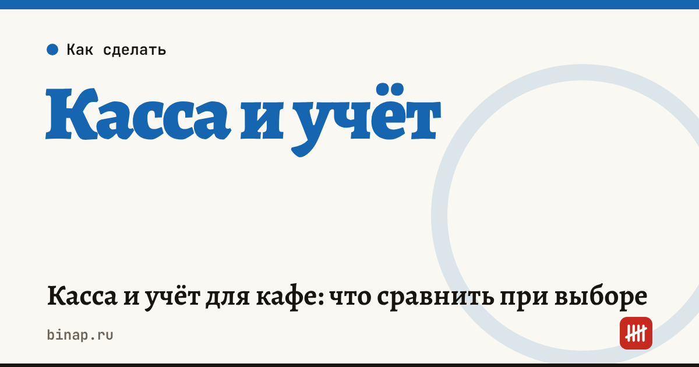

Касса и учёт для кафе: что сравнить при выборе

Для кафе касса и учёт — это одна система: касса пробивает чеки, а учёт списывает продукты по техкартам, ведёт склад и показывает себестоимость. Сравнивать стоит по восьми критериям: касса в реестре ФНС, фискальный накопитель, ЕГАИС, маркировка, техкарты и склад, доставка, отчёты и полная стоимость владения.
Коротко
- Касса должна быть в реестре ККТ ФНС — проверьте модель до покупки.
- Срок фискального накопителя зависит от режима налогообложения и продажи подакцизных товаров — уточните, какой нужен вам.
- Если продаёте пиво или алкоголь, нужна работа с ЕГАИС.
- Маркированные товары (например, вода и молочная продукция) требуют работы с «Честным знаком».
- Главная экономия от учёта — списания по техкартам и контроль себестоимости, а не сам чек.
Сроки, изменения и разборы для ИП и самозанятых — каждое утро в Telegram и MAX. Подпишитесь, чтобы не пропустить.
8 критериев сравнения
| № | Критерий | Что проверить |
|---|---|---|
| 1 | Касса в реестре ФНС | модель есть в реестре ККТ на сайте ФНС |
| 2 | Фискальный накопитель | срок, подходящий вашему режиму, и стоимость замены |
| 3 | ЕГАИС | если продаёте пиво или алкоголь — поддержка и подготовка документов |
| 4 | Маркировка | приёмка и списание маркированных товаров |
| 5 | Техкарты и склад | автоматическое списание продуктов, инвентаризация |
| 6 | Доставка | заказы из агрегаторов попадают в кассу и учёт |
| 7 | Отчёты | фудкост по блюдам, выручка по часам, сотрудники |
| 8 | Стоимость владения | касса, ФН, ОФД, подписка на учёт, эквайринг за год |
Стоимость владения: как посчитать
Стоимость в год = касса ÷ срок службы + фискальный накопитель ÷ срок ФН + ОФД + подписка на учёт + эквайринг.
Пример (расчёт редакции, цены условные — подставьте свои с официальных страниц).
| Статья | За год |
|---|---|
| Касса 30 000 ₽ на 3 года | 10 000 ₽ |
| Фискальный накопитель | 9 000 ₽ |
| ОФД | 3 000 ₽ |
| Подписка на учёт | 24 000 ₽ |
| Эквайринг 1,8% с 6 млн ₽ безналичной выручки | 108 000 ₽ |
| Итого | 154 000 ₽ |
Самая большая статья — эквайринг, а не касса. Поэтому сравнивайте ставки эквайринга внимательнее, чем цену кассы — как сравнить тарифы.
Что учёт возвращает. Если учёт по техкартам снижает списания на 2% от себестоимости продуктов 2 400 000 ₽ в год, это 48 000 ₽ — две годовые подписки. Себестоимость блюд — в калькуляторе фудкоста.
Онлайн-касса и учёт для общепита: ссылка
Что сделать
- Проверьте модель своей кассы в реестре ККТ на сайте ФНС.
- Выпишите, что вы продаёте: пиво и алкоголь, маркированные товары, доставка.
- Сравните 2–3 системы по таблице и посчитайте стоимость владения за год.
- Проверьте, умеет ли учёт считать фудкост по блюдам.
Что проверяют на рейдах по кассам — рейды ФНС. Как считать себестоимость и наценку — себестоимость блюда. Все шаги — в разделе «Кафе и общепиту».
Частые вопросы
Нужна ли кафе отдельная система учёта, если есть касса? Касса пробивает чеки, но не считает себестоимость и склад. Для кафе с меню больше 20 позиций учёт по техкартам обычно окупается.
Что если касса сломалась? Восстановите работу и пробейте чеки коррекции — отдельно по каждому расчёту, а не одним чеком на всю сумму.
Нужен ли ЕГАИС кафе без алкоголя? Если не продаёте пиво и алкоголь — нет.